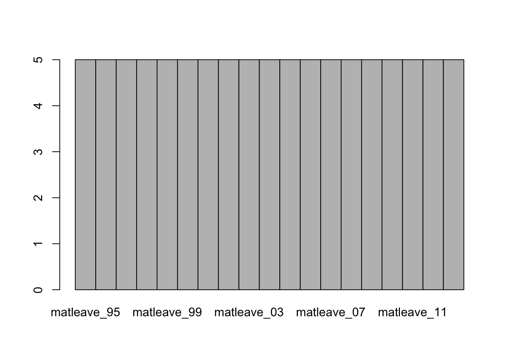
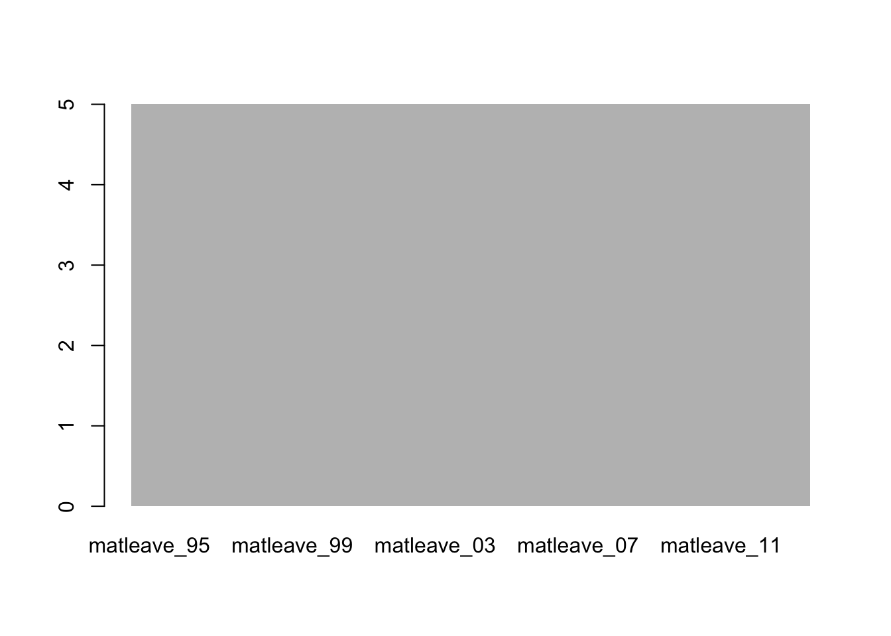
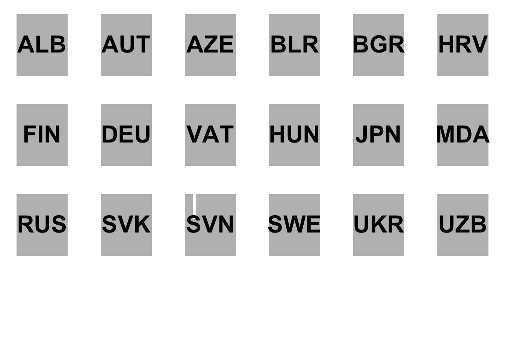
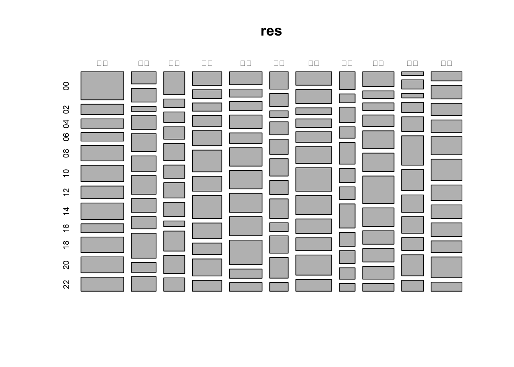
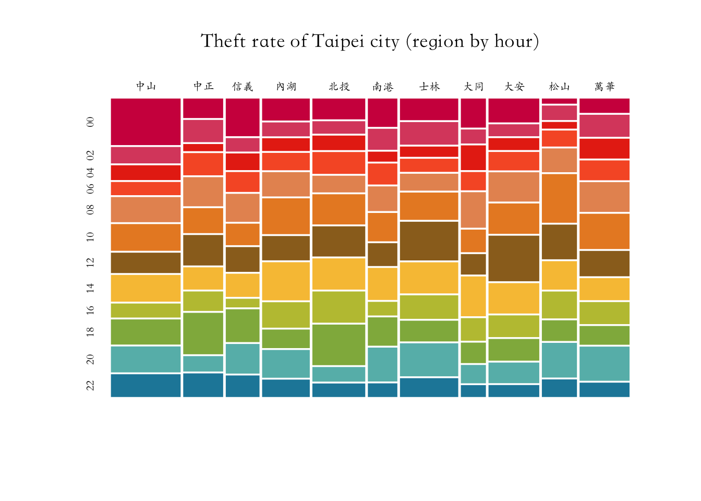

Chapter 6 獲取資料：讀檔與爬蟲
章節規劃： * Basic skills of reading files * Read excel * Read csv *
6.1 讀取Excel：以世界各國產假支薪政策為例
這份資料適合完全沒有碰過R的人學習，更適用於了解R的基本資料型態的人（如vector、data.frame等）。在這份教學中你將依序透過操作學到：
1. 如何讀入Excel檔（.xlsx, .xls）？
2. 運用R base套件篩選資料列與欄。如何從data.frame選出所需要的變項欄？如何篩出所要的資料列？
3. 如何進行基礎的NA值處理？is.na()
4. 如何繪製長條圖？如何繪製數個子圖？如何利用for-loop重複執行類似的程式碼？
5. 利用barplot()來繪製長條圖。
在這個案例中尤其要注意的是如何運用R的base套件選取所需的變項欄與篩取合乎條件的資料列，這是基本功，也是拿到資料、成功讀檔、確認變項變數型態後的下一件事，以及進入資料彙整（Summarization）前所需要思考的前置步驟。因為NA值的處理通常依照案例需求有不同的作法，繪圖更是需要根據案例、視資料類型、視覺化工具等進行調整。所以，我自己通常R寫久了以後，不見得會記得要怎麼繪圖（我會對我用過的函式留下一點點印象，然後用ctrl-shift-f查詢看看是否我在哪一個檔案曾經用過該函式。
案例說明：產假支薪（Paid Maternal Leave）。本案例將利用R來重製華盛頓郵報在2016/08/13的一篇談論美國婦女產假支薪情形的報導。這個案例中將會應用到data.frame和基本的繪圖與資料摘要方法。Melissa Etehad & Jeremy C.F. Lin (August 13, 2016) The world is getting better at paid maternity leave. The U.S. is not. The Washington Post
我希望仿照The Washington Post的報導，先以最後一年為基準分5, 4, 3, 2, 1（福利由高到沒有）數層來繪製。首先先繪製最後一年（matleave_13）為5的。然後再分左右兩半，左邊原為一開始有紀錄就是5的（包含最早matleave_95沒資料的如SRB和MNE），右邊原為一開始有紀錄就不是5的。但為了方便起見，我把問題簡化為「左半側為matleave_95為5的，右半側為matleave_95不是5的」如下圖，所以照我方法繪製出來的圖會有一點差異，MNE和SRB就被歸到右邊（灰色）第一年不是5的資料群。 而以下的範例程式，就以繪製出有紀錄的最後一年（matleave_13）為5，有資料的第一年（matleave_95）亦為5的區塊，也就是左半邊藍色的區塊。
6.1.1 程式寫作：使用base套件
6.1.1.1 步驟一：用readxl套件讀取Excel檔
## Warning: package 'readxl' was built under R version 3.5.2options(stringsAsFactors = FALSE)
rawdata <- read_excel("data/WORLD-MACHE_Gender_6.8.15.xls", "Sheet1", col_names=T)- R的base套件中沒有內建讀取Excel檔的工具，所以需要安裝並載入讀取Excel檔的第三方套件
readxl才有辦法讀取Excel檔。 - 為了避免讀取到文字型態chr的資料被程式自動轉為factor，使用
options(stringsAsFactors = FALSE)自動將所有帶參數stringsAsFactors的參數值設為FALSE。 - 利用
?read_excel查詢一下可以怎麼用該函式如下。help上提到，該函式的功能為讀取.xls與xlsx檔，正確來說，是將.xls檔和.xlsx檔讀取後轉存為R的資料型態如data.frame或list。 read_excel()函式有以下幾個參數可以設定：path指的是檔案路徑、sheet指的是哪一個資料表，可以給資料表名稱（如上例）或者指定第幾個資料表；skip則可以忽略掉一些Excel開頭可能包含的幾列不需要的詮釋資料，其他可以詳閱查詢help的說明。Example 6.1 read_excel(path, sheet = NULL, range = NULL, col_names = TRUE, col_types = NULL, na = "", trim_ws = TRUE, skip = 0, n_max = Inf, guess_max = min(1000, n_max))
觀察資料：通常讀取好資料後，我會習慣性地用View()指令來觀察該data.frame。然後我會運用一些函式來協助我觀察一下該data.frame的特性。class()可以獲取資料型態、dim()可以獲知有幾列幾行（先列後行）、names()可以知道有哪些變項。但我最常用的是dplyr套件的glimpse()或str()，它告訴我這個其為一個data.frame，且有197個observation，也就是列，和156個變項。且str()會列出每個變數的變數名稱、變數型態（例如下方的iso2變數型態為chr（character，文字型態），而wb_econ的變數型態為num（numeric，數值型態），每個變數他會列出前幾筆資料。
## [1] "tbl_df" "tbl" "data.frame"## [1] 197 156## [1] "country" "iso2" "iso3"
## [4] "region" "wb_econ" "matleave_95"
## [7] "matleave_96" "matleave_97" "matleave_98"
## [10] "matleave_99" "matleave_00" "matleave_01"
## [13] "matleave_02" "matleave_03" "matleave_04"
## [16] "matleave_05" "matleave_06" "matleave_07"
## [19] "matleave_08" "matleave_09" "matleave_10"
## [22] "matleave_11" "matleave_12" "matleave_13"
## [25] "matleave_wrr_95" "matleave_wrr_96" "matleave_wrr_97"
## [28] "matleave_wrr_98" "matleave_wrr_99" "matleave_wrr_00"
## [31] "matleave_wrr_01" "matleave_wrr_02" "matleave_wrr_03"
## [34] "matleave_wrr_04" "matleave_wrr_05" "matleave_wrr_06"
## [37] "matleave_wrr_07" "matleave_wrr_08" "matleave_wrr_09"
## [40] "matleave_wrr_10" "matleave_wrr_11" "matleave_wrr_12"
## [43] "matleave_wrr_13" "bf_dur_95" "bf_dur_96"
## [46] "bf_dur_97" "bf_dur_98" "bf_dur_99"
## [49] "bf_dur_00" "bf_dur_01" "bf_dur_02"
## [52] "bf_dur_03" "bf_dur_04" "bf_dur_05"
## [55] "bf_dur_06" "bf_dur_07" "bf_dur_08"
## [58] "bf_dur_09" "bf_dur_10" "bf_dur_11"
## [61] "bf_dur_12" "bf_dur_13" "mat_bfeed_6mon_95"
## [64] "mat_bfeed_6mon_96" "mat_bfeed_6mon_97" "mat_bfeed_6mon_98"
## [67] "mat_bfeed_6mon_99" "mat_bfeed_6mon_00" "mat_bfeed_6mon_01"
## [70] "mat_bfeed_6mon_02" "mat_bfeed_6mon_03" "mat_bfeed_6mon_04"
## [73] "mat_bfeed_6mon_05" "mat_bfeed_6mon_06" "mat_bfeed_6mon_07"
## [76] "mat_bfeed_6mon_08" "mat_bfeed_6mon_09" "mat_bfeed_6mon_10"
## [79] "mat_bfeed_6mon_11" "mat_bfeed_6mon_12" "mat_bfeed_6mon_13"
## [82] "minage_fem_leg_95" "minage_fem_leg_96" "minage_fem_leg_97"
## [85] "minage_fem_leg_98" "minage_fem_leg_99" "minage_fem_leg_00"
## [88] "minage_fem_leg_01" "minage_fem_leg_02" "minage_fem_leg_03"
## [91] "minage_fem_leg_04" "minage_fem_leg_05" "minage_fem_leg_06"
## [94] "minage_fem_leg_07" "minage_fem_leg_08" "minage_fem_leg_09"
## [97] "minage_fem_leg_10" "minage_fem_leg_11" "minage_fem_leg_12"
## [100] "legal_diff_leg_95" "legal_diff_leg_96" "legal_diff_leg_97"
## [103] "legal_diff_leg_98" "legal_diff_leg_99" "legal_diff_leg_00"
## [106] "legal_diff_leg_01" "legal_diff_leg_02" "legal_diff_leg_03"
## [109] "legal_diff_leg_04" "legal_diff_leg_05" "legal_diff_leg_06"
## [112] "legal_diff_leg_07" "legal_diff_leg_08" "legal_diff_leg_09"
## [115] "legal_diff_leg_10" "legal_diff_leg_11" "legal_diff_leg_12"
## [118] "minage_fem_pc_95" "minage_fem_pc_96" "minage_fem_pc_97"
## [121] "minage_fem_pc_98" "minage_fem_pc_99" "minage_fem_pc_00"
## [124] "minage_fem_pc_01" "minage_fem_pc_02" "minage_fem_pc_03"
## [127] "minage_fem_pc_04" "minage_fem_pc_05" "minage_fem_pc_06"
## [130] "minage_fem_pc_07" "minage_fem_pc_08" "minage_fem_pc_09"
## [133] "minage_fem_pc_10" "minage_fem_pc_11" "minage_fem_pc_12"
## [136] "legal_diff_pc_95" "legal_diff_pc_96" "legal_diff_pc_97"
## [139] "legal_diff_pc_98" "legal_diff_pc_99" "legal_diff_pc_00"
## [142] "legal_diff_pc_01" "legal_diff_pc_02" "legal_diff_pc_03"
## [145] "legal_diff_pc_04" "legal_diff_pc_05" "legal_diff_pc_06"
## [148] "legal_diff_pc_07" "legal_diff_pc_08" "legal_diff_pc_09"
## [151] "legal_diff_pc_10" "legal_diff_pc_11" "legal_diff_pc_12"
## [154] "minwage_ppp_2013" "mw_overtime" "oecd"## Classes 'tbl_df', 'tbl' and 'data.frame': 197 obs. of 156 variables:
## $ country : chr "Afghanistan" "Albania" "Algeria" "Andorra" ...
## $ iso2 : chr "AF" "AL" "DZ" "AD" ...
## $ iso3 : chr "AFG" "ALB" "DZA" "AND" ...
## $ region : chr "South Asia" "Europe & Central Asia" "Middle East & North Africa" "Europe & Central Asia" ...
## $ wb_econ : num 1 2 2 4 2 4 2 2 4 4 ...
## $ matleave_95 : num 2 5 3 2 2 2 2 3 1 5 ...
## $ matleave_96 : num 2 5 3 2 2 2 2 3 1 5 ...
## $ matleave_97 : num 2 5 3 2 2 2 2 3 1 5 ...
## $ matleave_98 : num 2 5 3 2 2 2 2 3 1 5 ...
## $ matleave_99 : num 2 5 3 2 2 2 2 3 1 5 ...
## $ matleave_00 : num 2 5 3 3 2 2 2 3 1 5 ...
## $ matleave_01 : num 2 5 3 3 2 2 2 3 1 5 ...
## $ matleave_02 : num 2 5 3 3 2 2 2 3 1 5 ...
## $ matleave_03 : num 2 5 3 3 2 2 2 3 1 5 ...
## $ matleave_04 : num 2 5 3 3 2 2 2 5 1 5 ...
## $ matleave_05 : num 2 5 3 3 2 2 2 5 1 5 ...
## $ matleave_06 : num 2 5 3 3 2 2 2 5 1 5 ...
## $ matleave_07 : num 2 5 3 3 2 2 2 5 1 5 ...
## $ matleave_08 : num 2 5 3 3 2 2 2 5 1 5 ...
## $ matleave_09 : num 2 5 3 3 2 2 2 5 1 5 ...
## $ matleave_10 : num 2 5 3 3 2 2 2 5 NA 5 ...
## $ matleave_11 : num 2 5 3 3 2 2 2 5 3 5 ...
## $ matleave_12 : num 2 5 3 3 2 2 2 5 3 5 ...
## $ matleave_13 : num 2 5 3 3 2 2 2 5 3 5 ...
## $ matleave_wrr_95 : num 5 4 5 5 5 3 5 5 1 5 ...
## $ matleave_wrr_96 : num 5 4 5 5 5 3 5 5 1 5 ...
## $ matleave_wrr_97 : num 5 4 5 5 5 3 5 5 1 5 ...
## $ matleave_wrr_98 : num 5 4 5 5 5 5 5 5 1 5 ...
## $ matleave_wrr_99 : num 5 4 5 5 5 5 5 5 1 5 ...
## $ matleave_wrr_00 : num 5 4 5 5 5 5 5 5 1 5 ...
## $ matleave_wrr_01 : num 5 4 5 5 5 5 5 5 1 5 ...
## $ matleave_wrr_02 : num 5 4 5 5 5 5 5 5 1 5 ...
## $ matleave_wrr_03 : num 5 4 5 5 5 5 5 5 1 5 ...
## $ matleave_wrr_04 : num 5 4 5 5 5 5 5 5 1 5 ...
## $ matleave_wrr_05 : num 5 4 5 5 5 5 5 5 1 5 ...
## $ matleave_wrr_06 : num 5 4 5 5 5 5 5 5 1 5 ...
## $ matleave_wrr_07 : num 5 4 5 5 5 5 5 5 1 5 ...
## $ matleave_wrr_08 : num 5 4 5 5 5 5 5 5 1 5 ...
## $ matleave_wrr_09 : num 5 4 5 5 5 5 5 5 1 5 ...
## $ matleave_wrr_10 : num 5 4 5 5 5 5 5 5 NA 5 ...
## $ matleave_wrr_11 : num 5 4 5 5 5 5 5 5 2 5 ...
## $ matleave_wrr_12 : num 5 4 5 5 5 5 5 5 2 5 ...
## $ matleave_wrr_13 : num 5 4 5 5 5 5 5 5 2 5 ...
## $ bf_dur_95 : num 5 1 1 NA 5 1 5 5 1 5 ...
## $ bf_dur_96 : num 5 5 1 NA 5 1 5 5 1 5 ...
## $ bf_dur_97 : num 5 5 1 NA 5 1 5 5 1 5 ...
## $ bf_dur_98 : num 5 5 1 NA 5 1 5 5 1 5 ...
## $ bf_dur_99 : num 5 5 1 NA 5 1 5 5 1 5 ...
## $ bf_dur_00 : num 5 5 1 NA 5 1 5 5 1 5 ...
## $ bf_dur_01 : num 5 5 1 NA 5 1 5 5 1 5 ...
## $ bf_dur_02 : num 5 5 NA NA 5 1 5 5 1 5 ...
## $ bf_dur_03 : num 5 5 NA 5 5 1 5 5 1 5 ...
## $ bf_dur_04 : num 5 5 1 5 5 1 5 5 1 5 ...
## $ bf_dur_05 : num 5 5 1 5 5 1 5 5 1 5 ...
## $ bf_dur_06 : num 5 5 1 5 5 1 5 5 1 5 ...
## $ bf_dur_07 : num 5 5 1 5 5 1 5 5 1 5 ...
## $ bf_dur_08 : num 5 5 1 5 5 1 5 5 1 5 ...
## $ bf_dur_09 : num 5 5 1 5 5 1 5 5 1 5 ...
## $ bf_dur_10 : num 5 5 1 5 5 1 5 5 1 5 ...
## $ bf_dur_11 : num 5 5 1 5 5 1 5 5 1 5 ...
## $ bf_dur_12 : num 5 5 1 5 5 1 5 5 1 5 ...
## $ bf_dur_13 : num 5 5 1 5 5 1 5 5 1 5 ...
## $ mat_bfeed_6mon_95: num 3 3 1 NA 3 1 3 3 1 5 ...
## $ mat_bfeed_6mon_96: num 3 5 1 NA 3 1 3 3 1 5 ...
## $ mat_bfeed_6mon_97: num 3 5 1 NA 3 1 3 3 1 5 ...
## $ mat_bfeed_6mon_98: num 3 5 1 NA 3 1 3 3 1 5 ...
## $ mat_bfeed_6mon_99: num 3 5 1 NA 3 1 3 3 1 5 ...
## $ mat_bfeed_6mon_00: num 3 5 1 NA 3 1 3 3 1 5 ...
## $ mat_bfeed_6mon_01: num 3 5 1 NA 3 1 3 3 1 5 ...
## $ mat_bfeed_6mon_02: num 3 5 NA NA 3 1 3 3 1 5 ...
## $ mat_bfeed_6mon_03: num 3 5 NA 3 3 1 3 3 1 5 ...
## $ mat_bfeed_6mon_04: num 3 5 1 3 3 1 3 5 1 5 ...
## $ mat_bfeed_6mon_05: num 3 5 1 3 3 1 3 5 1 5 ...
## $ mat_bfeed_6mon_06: num 3 5 1 3 3 1 3 5 1 5 ...
## $ mat_bfeed_6mon_07: num 3 5 1 3 3 1 3 5 1 5 ...
## $ mat_bfeed_6mon_08: num 3 5 1 3 3 1 3 5 1 5 ...
## $ mat_bfeed_6mon_09: num 3 5 1 3 3 1 3 5 1 5 ...
## $ mat_bfeed_6mon_10: num 3 5 1 3 3 1 3 5 1 5 ...
## $ mat_bfeed_6mon_11: num 3 5 1 3 3 1 3 5 1 5 ...
## $ mat_bfeed_6mon_12: num 3 5 1 3 3 1 3 5 1 5 ...
## $ mat_bfeed_6mon_13: num 3 5 1 3 3 1 3 5 1 5 ...
## $ minage_fem_leg_95: num 4 4 5 NA 5 NA 5 4 NA NA ...
## $ minage_fem_leg_96: num 4 4 5 NA 5 NA 5 4 NA NA ...
## $ minage_fem_leg_97: num 4 4 5 NA 5 NA 5 4 NA NA ...
## $ minage_fem_leg_98: num 4 4 5 NA 5 NA 5 4 NA NA ...
## $ minage_fem_leg_99: num 4 4 5 NA 5 NA 5 4 NA NA ...
## $ minage_fem_leg_00: num 4 4 5 NA 5 NA 5 4 NA NA ...
## $ minage_fem_leg_01: num 4 4 5 NA 5 NA 5 4 NA NA ...
## $ minage_fem_leg_02: num 4 4 5 NA 5 NA 5 4 NA NA ...
## $ minage_fem_leg_03: num 4 5 5 NA 5 NA 5 4 NA NA ...
## $ minage_fem_leg_04: num 4 5 5 NA 5 NA 5 4 NA NA ...
## $ minage_fem_leg_05: num 4 5 5 NA 5 NA 5 4 NA NA ...
## $ minage_fem_leg_06: num 4 5 5 NA 5 NA 5 4 NA NA ...
## $ minage_fem_leg_07: num 4 5 5 NA 5 NA 5 4 NA NA ...
## $ minage_fem_leg_08: num 4 5 5 NA 5 NA 5 4 NA NA ...
## $ minage_fem_leg_09: num 4 5 5 NA 5 NA 5 4 NA NA ...
## $ minage_fem_leg_10: num 4 5 5 NA 5 NA 5 4 NA NA ...
## $ minage_fem_leg_11: num 4 5 5 NA 5 NA 5 4 NA NA ...
## $ minage_fem_leg_12: num 4 5 5 NA 5 NA 5 4 NA NA ...
## [list output truncated]## Observations: 197
## Variables: 156
## $ country <chr> "Afghanistan", "Albania", "Algeria", "Andorra", "An…
## $ iso2 <chr> "AF", "AL", "DZ", "AD", "AO", "AG", "AR", "AM", "AU…
## $ iso3 <chr> "AFG", "ALB", "DZA", "AND", "AGO", "ATG", "ARG", "A…
## $ region <chr> "South Asia", "Europe & Central Asia", "Middle East…
## $ wb_econ <dbl> 1, 2, 2, 4, 2, 4, 2, 2, 4, 4, 2, 4, 4, 1, 4, 2, 4, …
## $ matleave_95 <dbl> 2, 5, 3, 2, 2, 2, 2, 3, 1, 5, 5, 2, 2, 2, 2, 5, 3, …
## $ matleave_96 <dbl> 2, 5, 3, 2, 2, 2, 2, 3, 1, 5, 5, 2, 2, 2, 2, 5, 3, …
## $ matleave_97 <dbl> 2, 5, 3, 2, 2, 2, 2, 3, 1, 5, 5, 2, 2, 2, 2, 5, 3, …
## $ matleave_98 <dbl> 2, 5, 3, 2, 2, 2, 2, 3, 1, 5, 5, 2, 2, 2, 2, 5, 4, …
## $ matleave_99 <dbl> 2, 5, 3, 2, 2, 2, 2, 3, 1, 5, 5, 2, 2, 2, 2, 5, 4, …
## $ matleave_00 <dbl> 2, 5, 3, 3, 2, 2, 2, 3, 1, 5, 5, 2, 2, 2, 2, 5, 4, …
## $ matleave_01 <dbl> 2, 5, 3, 3, 2, 2, 2, 3, 1, 5, 5, 2, 2, 2, 2, 5, 4, …
## $ matleave_02 <dbl> 2, 5, 3, 3, 2, 2, 2, 3, 1, 5, 5, 2, 2, 2, 2, 5, 4, …
## $ matleave_03 <dbl> 2, 5, 3, 3, 2, 2, 2, 3, 1, 5, 5, 2, 2, 2, 2, 5, 4, …
## $ matleave_04 <dbl> 2, 5, 3, 3, 2, 2, 2, 5, 1, 5, 5, 2, 2, 2, 2, 5, 4, …
## $ matleave_05 <dbl> 2, 5, 3, 3, 2, 2, 2, 5, 1, 5, 5, 2, 2, 2, 2, 5, 4, …
## $ matleave_06 <dbl> 2, 5, 3, 3, 2, 2, 2, 5, 1, 5, 5, 2, 2, 3, 2, 5, 4, …
## $ matleave_07 <dbl> 2, 5, 3, 3, 2, 2, 2, 5, 1, 5, 5, 2, 2, 3, 2, 5, 4, …
## $ matleave_08 <dbl> 2, 5, 3, 3, 2, 2, 2, 5, 1, 5, 5, 2, 2, 3, 2, 5, 4, …
## $ matleave_09 <dbl> 2, 5, 3, 3, 2, 2, 2, 5, 1, 5, 5, 2, 2, 3, 2, 5, 4, …
## $ matleave_10 <dbl> 2, 5, 3, 3, 2, 2, 2, 5, NA, 5, 5, 2, 2, 3, 2, 5, 4,…
## $ matleave_11 <dbl> 2, 5, 3, 3, 2, 2, 2, 5, 3, 5, 5, 2, 2, 3, 2, 5, 4, …
## $ matleave_12 <dbl> 2, 5, 3, 3, 2, 2, 2, 5, 3, 5, 5, 2, 2, 3, 2, 5, 4, …
## $ matleave_13 <dbl> 2, 5, 3, 3, 2, 2, 2, 5, 3, 5, 5, 2, 2, 3, 2, 5, 4, …
## $ matleave_wrr_95 <dbl> 5, 4, 5, 5, 5, 3, 5, 5, 1, 5, 5, 5, 5, 5, 5, 5, 4, …
## $ matleave_wrr_96 <dbl> 5, 4, 5, 5, 5, 3, 5, 5, 1, 5, 5, 5, 5, 5, 5, 5, 4, …
## $ matleave_wrr_97 <dbl> 5, 4, 5, 5, 5, 3, 5, 5, 1, 5, 5, 5, 5, 5, 5, 5, 4, …
## $ matleave_wrr_98 <dbl> 5, 4, 5, 5, 5, 5, 5, 5, 1, 5, 5, 5, 5, 5, 5, 5, 4, …
## $ matleave_wrr_99 <dbl> 5, 4, 5, 5, 5, 5, 5, 5, 1, 5, 5, 5, 5, 5, 5, 5, 4, …
## $ matleave_wrr_00 <dbl> 5, 4, 5, 5, 5, 5, 5, 5, 1, 5, 5, 5, 5, 5, 5, 5, 4, …
## $ matleave_wrr_01 <dbl> 5, 4, 5, 5, 5, 5, 5, 5, 1, 5, 5, 5, 5, 5, 5, 5, 4, …
## $ matleave_wrr_02 <dbl> 5, 4, 5, 5, 5, 5, 5, 5, 1, 5, 5, 5, 5, 5, 5, 5, 4, …
## $ matleave_wrr_03 <dbl> 5, 4, 5, 5, 5, 5, 5, 5, 1, 5, 5, 5, 5, 5, 5, 5, 4, …
## $ matleave_wrr_04 <dbl> 5, 4, 5, 5, 5, 5, 5, 5, 1, 5, 5, 5, 5, 5, 5, 5, 4, …
## $ matleave_wrr_05 <dbl> 5, 4, 5, 5, 5, 5, 5, 5, 1, 5, 5, 5, 5, 5, 5, 5, 4, …
## $ matleave_wrr_06 <dbl> 5, 4, 5, 5, 5, 5, 5, 5, 1, 5, 5, 5, 5, 5, 5, 5, 4, …
## $ matleave_wrr_07 <dbl> 5, 4, 5, 5, 5, 5, 5, 5, 1, 5, 5, 5, 5, 5, 5, 5, 4, …
## $ matleave_wrr_08 <dbl> 5, 4, 5, 5, 5, 5, 5, 5, 1, 5, 5, 5, 5, 5, 5, 5, 4, …
## $ matleave_wrr_09 <dbl> 5, 4, 5, 5, 5, 5, 5, 5, 1, 5, 5, 5, 5, 5, 5, 5, 4, …
## $ matleave_wrr_10 <dbl> 5, 4, 5, 5, 5, 5, 5, 5, NA, 5, 5, 5, 5, 5, 5, 5, 4,…
## $ matleave_wrr_11 <dbl> 5, 4, 5, 5, 5, 5, 5, 5, 2, 5, 5, 5, 5, 5, 5, 5, 4, …
## $ matleave_wrr_12 <dbl> 5, 4, 5, 5, 5, 5, 5, 5, 2, 5, 5, 5, 5, 5, 5, 5, 4, …
## $ matleave_wrr_13 <dbl> 5, 4, 5, 5, 5, 5, 5, 5, 2, 5, 5, 5, 5, 5, 5, 5, 4, …
## $ bf_dur_95 <dbl> 5, 1, 1, NA, 5, 1, 5, 5, 1, 5, 5, 1, 3, 1, 1, 5, 1,…
## $ bf_dur_96 <dbl> 5, 5, 1, NA, 5, 1, 5, 5, 1, 5, 5, 1, 3, 1, 1, 5, 1,…
## $ bf_dur_97 <dbl> 5, 5, 1, NA, 5, 1, 5, 5, 1, 5, 5, 1, 3, 1, 1, 5, 1,…
## $ bf_dur_98 <dbl> 5, 5, 1, NA, 5, 1, 5, 5, 1, 5, 5, 1, 3, 1, 1, 5, 1,…
## $ bf_dur_99 <dbl> 5, 5, 1, NA, 5, 1, 5, 5, 1, 5, 5, 1, 3, 1, 1, 5, 1,…
## $ bf_dur_00 <dbl> 5, 5, 1, NA, 5, 1, 5, 5, 1, 5, 5, 1, 3, 1, 1, 5, 1,…
## $ bf_dur_01 <dbl> 5, 5, 1, NA, 5, 1, 5, 5, 1, 5, 5, 1, 3, 1, 1, 5, 1,…
## $ bf_dur_02 <dbl> 5, 5, NA, NA, 5, 1, 5, 5, 1, 5, 5, 1, 3, 1, 1, 5, 5…
## $ bf_dur_03 <dbl> 5, 5, NA, 5, 5, 1, 5, 5, 1, 5, 5, 1, 3, 1, 1, 5, 5,…
## $ bf_dur_04 <dbl> 5, 5, 1, 5, 5, 1, 5, 5, 1, 5, 5, 1, 3, 1, 1, 5, 5, …
## $ bf_dur_05 <dbl> 5, 5, 1, 5, 5, 1, 5, 5, 1, 5, 5, 1, 3, 1, 1, 5, 5, …
## $ bf_dur_06 <dbl> 5, 5, 1, 5, 5, 1, 5, 5, 1, 5, 5, 1, 3, 1, 1, 5, 5, …
## $ bf_dur_07 <dbl> 5, 5, 1, 5, 5, 1, 5, 5, 1, 5, 5, 1, 3, 1, 1, 5, 5, …
## $ bf_dur_08 <dbl> 5, 5, 1, 5, 5, 1, 5, 5, 1, 5, 5, 1, 3, 1, 1, 5, 5, …
## $ bf_dur_09 <dbl> 5, 5, 1, 5, 5, 1, 5, 5, 1, 5, 5, 1, 3, 1, 1, 5, 5, …
## $ bf_dur_10 <dbl> 5, 5, 1, 5, 5, 1, 5, 5, 1, 5, 5, 1, 3, 1, 1, 5, 5, …
## $ bf_dur_11 <dbl> 5, 5, 1, 5, 5, 1, 5, 5, 1, 5, 5, 1, 3, 1, 1, 5, 5, …
## $ bf_dur_12 <dbl> 5, 5, 1, 5, 5, 1, 5, 5, 1, 5, 5, 1, 5, 1, 1, 5, 5, …
## $ bf_dur_13 <dbl> 5, 5, 1, 5, 5, 1, 5, 5, 1, 5, 5, 1, 5, 1, 1, 5, 5, …
## $ mat_bfeed_6mon_95 <dbl> 3, 3, 1, NA, 3, 1, 3, 3, 1, 5, 5, 1, 1, 1, 1, 5, 1,…
## $ mat_bfeed_6mon_96 <dbl> 3, 5, 1, NA, 3, 1, 3, 3, 1, 5, 5, 1, 1, 1, 1, 5, 1,…
## $ mat_bfeed_6mon_97 <dbl> 3, 5, 1, NA, 3, 1, 3, 3, 1, 5, 5, 1, 1, 1, 1, 5, 1,…
## $ mat_bfeed_6mon_98 <dbl> 3, 5, 1, NA, 3, 1, 3, 3, 1, 5, 5, 1, 1, 1, 1, 5, 3,…
## $ mat_bfeed_6mon_99 <dbl> 3, 5, 1, NA, 3, 1, 3, 3, 1, 5, 5, 1, 1, 1, 1, 5, 3,…
## $ mat_bfeed_6mon_00 <dbl> 3, 5, 1, NA, 3, 1, 3, 3, 1, 5, 5, 1, 1, 1, 1, 5, 3,…
## $ mat_bfeed_6mon_01 <dbl> 3, 5, 1, NA, 3, 1, 3, 3, 1, 5, 5, 1, 1, 1, 1, 5, 3,…
## $ mat_bfeed_6mon_02 <dbl> 3, 5, NA, NA, 3, 1, 3, 3, 1, 5, 5, 1, 1, 1, 1, 5, 5…
## $ mat_bfeed_6mon_03 <dbl> 3, 5, NA, 3, 3, 1, 3, 3, 1, 5, 5, 1, 1, 1, 1, 5, 5,…
## $ mat_bfeed_6mon_04 <dbl> 3, 5, 1, 3, 3, 1, 3, 5, 1, 5, 5, 1, 1, 1, 1, 5, 5, …
## $ mat_bfeed_6mon_05 <dbl> 3, 5, 1, 3, 3, 1, 3, 5, 1, 5, 5, 1, 1, 1, 1, 5, 5, …
## $ mat_bfeed_6mon_06 <dbl> 3, 5, 1, 3, 3, 1, 3, 5, 1, 5, 5, 1, 1, 1, 1, 5, 5, …
## $ mat_bfeed_6mon_07 <dbl> 3, 5, 1, 3, 3, 1, 3, 5, 1, 5, 5, 1, 1, 1, 1, 5, 5, …
## $ mat_bfeed_6mon_08 <dbl> 3, 5, 1, 3, 3, 1, 3, 5, 1, 5, 5, 1, 1, 1, 1, 5, 5, …
## $ mat_bfeed_6mon_09 <dbl> 3, 5, 1, 3, 3, 1, 3, 5, 1, 5, 5, 1, 1, 1, 1, 5, 5, …
## $ mat_bfeed_6mon_10 <dbl> 3, 5, 1, 3, 3, 1, 3, 5, 1, 5, 5, 1, 1, 1, 1, 5, 5, …
## $ mat_bfeed_6mon_11 <dbl> 3, 5, 1, 3, 3, 1, 3, 5, 1, 5, 5, 1, 1, 1, 1, 5, 5, …
## $ mat_bfeed_6mon_12 <dbl> 3, 5, 1, 3, 3, 1, 3, 5, 1, 5, 5, 1, 3, 1, 1, 5, 5, …
## $ mat_bfeed_6mon_13 <dbl> 3, 5, 1, 3, 3, 1, 3, 5, 1, 5, 5, 1, 3, 1, 1, 5, 5, …
## $ minage_fem_leg_95 <dbl> 4, 4, 5, NA, 5, NA, 5, 4, NA, NA, 5, NA, NA, 5, 5, …
## $ minage_fem_leg_96 <dbl> 4, 4, 5, NA, 5, NA, 5, 4, NA, NA, 5, NA, NA, 5, 5, …
## $ minage_fem_leg_97 <dbl> 4, 4, 5, NA, 5, NA, 5, 4, NA, NA, 5, NA, NA, 5, 5, …
## $ minage_fem_leg_98 <dbl> 4, 4, 5, NA, 5, NA, 5, 4, NA, NA, 5, NA, NA, 5, 5, …
## $ minage_fem_leg_99 <dbl> 4, 4, 5, NA, 5, NA, 5, 4, NA, NA, 4, NA, NA, 5, 5, …
## $ minage_fem_leg_00 <dbl> 4, 4, 5, NA, 5, NA, 5, 4, NA, NA, 4, NA, NA, 5, 5, …
## $ minage_fem_leg_01 <dbl> 4, 4, 5, NA, 5, NA, 5, 4, NA, NA, 4, NA, NA, 5, 5, …
## $ minage_fem_leg_02 <dbl> 4, 4, 5, NA, 5, NA, 5, 4, NA, NA, 4, NA, NA, 5, 5, …
## $ minage_fem_leg_03 <dbl> 4, 5, 5, NA, 5, NA, 5, 4, NA, NA, 4, NA, NA, 5, 5, …
## $ minage_fem_leg_04 <dbl> 4, 5, 5, NA, 5, NA, 5, 4, NA, NA, 4, NA, NA, 5, 5, …
## $ minage_fem_leg_05 <dbl> 4, 5, 5, NA, 5, NA, 5, 4, NA, NA, 4, NA, NA, 5, 5, …
## $ minage_fem_leg_06 <dbl> 4, 5, 5, NA, 5, NA, 5, 4, NA, NA, 4, NA, NA, 5, 5, …
## $ minage_fem_leg_07 <dbl> 4, 5, 5, NA, 5, NA, 5, 4, NA, NA, 4, NA, NA, 5, 5, …
## $ minage_fem_leg_08 <dbl> 4, 5, 5, NA, 5, NA, 5, 4, NA, NA, 4, NA, NA, 5, 5, …
## $ minage_fem_leg_09 <dbl> 4, 5, 5, NA, 5, NA, 5, 4, NA, NA, 4, NA, NA, 5, 5, …
## $ minage_fem_leg_10 <dbl> 4, 5, 5, NA, 5, NA, 5, 4, NA, NA, 4, NA, NA, 5, 5, …
## $ minage_fem_leg_11 <dbl> 4, 5, 5, NA, 5, NA, 5, 4, NA, NA, 4, NA, NA, 5, 5, …
## $ minage_fem_leg_12 <dbl> 4, 5, 5, NA, 5, NA, 5, 4, NA, NA, 4, NA, NA, 5, 5, …
## $ legal_diff_leg_95 <dbl> 3, 3, 2, NA, 5, NA, 5, 3, NA, NA, 5, NA, NA, 2, 5, …
## $ legal_diff_leg_96 <dbl> 3, 3, 2, NA, 5, NA, 5, 3, NA, NA, 5, NA, NA, 2, 5, …
## $ legal_diff_leg_97 <dbl> 3, 3, 2, NA, 5, NA, 5, 3, NA, NA, 5, NA, NA, 2, 5, …
## $ legal_diff_leg_98 <dbl> 3, 3, 2, NA, 5, NA, 5, 3, NA, NA, 5, NA, NA, 2, 5, …
## $ legal_diff_leg_99 <dbl> 3, 3, 2, NA, 5, NA, 5, 3, NA, NA, 3, NA, NA, 2, 5, …
## $ legal_diff_leg_00 <dbl> 3, 3, 2, NA, 5, NA, 5, 3, NA, NA, 3, NA, NA, 2, 5, …
## $ legal_diff_leg_01 <dbl> 3, 3, 2, NA, 5, NA, 5, 3, NA, NA, 3, NA, NA, 2, 5, …
## $ legal_diff_leg_02 <dbl> 3, 3, 2, NA, 5, NA, 5, 3, NA, NA, 3, NA, NA, 2, 5, …
## $ legal_diff_leg_03 <dbl> 3, 5, 2, NA, 5, NA, 5, 3, NA, NA, 3, NA, NA, 2, 5, …
## $ legal_diff_leg_04 <dbl> 3, 5, 2, NA, 5, NA, 5, 3, NA, NA, 3, NA, NA, 2, 5, …
## $ legal_diff_leg_05 <dbl> 3, 5, 5, NA, 5, NA, 5, 3, NA, NA, 3, NA, NA, 2, 5, …
## $ legal_diff_leg_06 <dbl> 3, 5, 5, NA, 5, NA, 5, 3, NA, NA, 3, NA, NA, 2, 5, …
## $ legal_diff_leg_07 <dbl> 3, 5, 5, NA, 5, NA, 5, 3, NA, NA, 3, NA, NA, 2, 5, …
## $ legal_diff_leg_08 <dbl> 3, 5, 5, NA, 5, NA, 5, 3, NA, NA, 3, NA, NA, 2, 5, …
## $ legal_diff_leg_09 <dbl> 3, 5, 5, NA, 5, NA, 5, 3, NA, NA, 3, NA, NA, 2, 5, …
## $ legal_diff_leg_10 <dbl> 3, 5, 5, NA, 5, NA, 5, 3, NA, NA, 3, NA, NA, 2, 5, …
## $ legal_diff_leg_11 <dbl> 3, 5, 5, NA, 5, NA, 5, 3, NA, NA, 3, NA, NA, 2, 5, …
## $ legal_diff_leg_12 <dbl> 3, 5, 5, NA, 5, NA, 5, 3, NA, NA, 3, NA, NA, 2, 5, …
## $ minage_fem_pc_95 <dbl> 3, 4, 5, NA, 3, NA, 4, 4, NA, NA, 5, NA, NA, 5, 4, …
## $ minage_fem_pc_96 <dbl> 3, 4, 5, NA, 3, NA, 4, 4, NA, NA, 5, NA, NA, 5, 4, …
## $ minage_fem_pc_97 <dbl> 3, 4, 5, NA, 3, NA, 4, 4, NA, NA, 5, NA, NA, 5, 4, …
## $ minage_fem_pc_98 <dbl> 3, 4, 5, NA, 3, NA, 4, 4, NA, NA, 5, NA, NA, 5, 4, …
## $ minage_fem_pc_99 <dbl> 3, 4, 5, NA, 3, NA, 4, 4, NA, NA, 4, NA, NA, 5, 4, …
## $ minage_fem_pc_00 <dbl> 3, 4, 5, NA, 3, NA, 4, 4, NA, NA, 4, NA, NA, 5, 4, …
## $ minage_fem_pc_01 <dbl> 3, 4, 5, NA, 3, NA, 4, 4, NA, NA, 4, NA, NA, 5, 4, …
## $ minage_fem_pc_02 <dbl> 3, 4, 5, NA, 3, NA, 4, 4, NA, NA, 4, NA, NA, 5, 4, …
## $ minage_fem_pc_03 <dbl> 3, 5, 5, NA, 3, NA, 4, 4, NA, NA, 4, NA, NA, 5, 4, …
## $ minage_fem_pc_04 <dbl> 3, 5, 5, NA, 3, NA, 4, 4, NA, NA, 4, NA, NA, 5, 4, …
## $ minage_fem_pc_05 <dbl> 3, 5, 5, NA, 3, NA, 4, 4, NA, NA, 4, NA, NA, 5, 4, …
## $ minage_fem_pc_06 <dbl> 3, 5, 5, NA, 3, NA, 4, 4, NA, NA, 4, NA, NA, 5, 4, …
## $ minage_fem_pc_07 <dbl> 3, 5, 5, NA, 3, NA, 4, 4, NA, NA, 4, NA, NA, 5, 4, …
## $ minage_fem_pc_08 <dbl> 3, 5, 5, NA, 3, NA, 4, 4, NA, NA, 4, NA, NA, 5, 4, …
## $ minage_fem_pc_09 <dbl> 3, 5, 5, NA, 3, NA, 5, 4, NA, NA, 4, NA, NA, 5, 4, …
## $ minage_fem_pc_10 <dbl> 3, 5, 5, NA, 3, NA, 5, 4, NA, NA, 4, NA, NA, 5, 4, …
## $ minage_fem_pc_11 <dbl> 3, 5, 5, NA, 3, NA, 5, 4, NA, NA, 4, NA, NA, 5, 4, …
## $ minage_fem_pc_12 <dbl> 3, 5, 5, NA, 3, NA, 5, 4, NA, NA, 4, NA, NA, 5, 4, …
## $ legal_diff_pc_95 <dbl> 2, 3, 2, NA, 3, NA, 3, 3, NA, NA, 5, NA, NA, 2, 5, …
## $ legal_diff_pc_96 <dbl> 2, 3, 2, NA, 3, NA, 3, 3, NA, NA, 5, NA, NA, 2, 5, …
## $ legal_diff_pc_97 <dbl> 2, 3, 2, NA, 3, NA, 3, 3, NA, NA, 5, NA, NA, 2, 5, …
## $ legal_diff_pc_98 <dbl> 2, 3, 2, NA, 3, NA, 3, 3, NA, NA, 5, NA, NA, 2, 5, …
## $ legal_diff_pc_99 <dbl> 2, 3, 2, NA, 3, NA, 3, 3, NA, NA, 3, NA, NA, 2, 5, …
## $ legal_diff_pc_00 <dbl> 2, 3, 2, NA, 3, NA, 3, 3, NA, NA, 3, NA, NA, 2, 5, …
## $ legal_diff_pc_01 <dbl> 2, 3, 2, NA, 3, NA, 3, 3, NA, NA, 3, NA, NA, 2, 5, …
## $ legal_diff_pc_02 <dbl> 2, 3, 2, NA, 3, NA, 3, 3, NA, NA, 3, NA, NA, 2, 5, …
## $ legal_diff_pc_03 <dbl> 2, 5, 2, NA, 3, NA, 3, 3, NA, NA, 3, NA, NA, 2, 5, …
## $ legal_diff_pc_04 <dbl> 2, 5, 2, NA, 3, NA, 3, 3, NA, NA, 3, NA, NA, 2, 5, …
## $ legal_diff_pc_05 <dbl> 2, 5, 5, NA, 3, NA, 3, 3, NA, NA, 3, NA, NA, 2, 5, …
## $ legal_diff_pc_06 <dbl> 2, 5, 5, NA, 3, NA, 3, 3, NA, NA, 3, NA, NA, 2, 5, …
## $ legal_diff_pc_07 <dbl> 2, 5, 5, NA, 3, NA, 3, 3, NA, NA, 3, NA, NA, 2, 5, …
## $ legal_diff_pc_08 <dbl> 2, 5, 5, NA, 3, NA, 3, 3, NA, NA, 3, NA, NA, 2, 5, …
## $ legal_diff_pc_09 <dbl> 2, 5, 5, NA, 3, NA, 5, 3, NA, NA, 3, NA, NA, 2, 5, …
## $ legal_diff_pc_10 <dbl> 2, 5, 5, NA, 3, NA, 5, 3, NA, NA, 3, NA, NA, 2, 5, …
## $ legal_diff_pc_11 <dbl> 2, 5, 5, NA, 3, NA, 5, 3, NA, NA, 3, NA, NA, 2, 5, …
## $ legal_diff_pc_12 <dbl> 2, 5, 5, NA, 3, NA, 5, 3, NA, NA, 3, NA, NA, 2, 5, …
## $ minwage_ppp_2013 <dbl> 4, 5, 5, NA, 4, NA, NA, 4, NA, NA, 4, NA, NA, 4, NA…
## $ mw_overtime <dbl> NA, 5, 2, NA, 2, NA, 5, 5, NA, NA, 5, NA, NA, -9, N…
## $ oecd <dbl> 0, 0, 0, 0, 0, 0, 0, 0, 1, 1, 0, 0, 0, 0, 0, 0, 1, …6.1.1.2 步驟二：選取所需變項
## Observations: 197
## Variables: 20
## $ iso3 <chr> "AFG", "ALB", "DZA", "AND", "AGO", "ATG", "ARG", "ARM", "…
## $ matleave_95 <dbl> 2, 5, 3, 2, 2, 2, 2, 3, 1, 5, 5, 2, 2, 2, 2, 5, 3, 2, 3, …
## $ matleave_96 <dbl> 2, 5, 3, 2, 2, 2, 2, 3, 1, 5, 5, 2, 2, 2, 2, 5, 3, 2, 3, …
## $ matleave_97 <dbl> 2, 5, 3, 2, 2, 2, 2, 3, 1, 5, 5, 2, 2, 2, 2, 5, 3, 2, 3, …
## $ matleave_98 <dbl> 2, 5, 3, 2, 2, 2, 2, 3, 1, 5, 5, 2, 2, 2, 2, 5, 4, 2, 3, …
## $ matleave_99 <dbl> 2, 5, 3, 2, 2, 2, 2, 3, 1, 5, 5, 2, 2, 2, 2, 5, 4, 2, 3, …
## $ matleave_00 <dbl> 2, 5, 3, 3, 2, 2, 2, 3, 1, 5, 5, 2, 2, 2, 2, 5, 4, 3, 3, …
## $ matleave_01 <dbl> 2, 5, 3, 3, 2, 2, 2, 3, 1, 5, 5, 2, 2, 2, 2, 5, 4, 3, 3, …
## $ matleave_02 <dbl> 2, 5, 3, 3, 2, 2, 2, 3, 1, 5, 5, 2, 2, 2, 2, 5, 4, 3, 3, …
## $ matleave_03 <dbl> 2, 5, 3, 3, 2, 2, 2, 3, 1, 5, 5, 2, 2, 2, 2, 5, 4, 3, 3, …
## $ matleave_04 <dbl> 2, 5, 3, 3, 2, 2, 2, 5, 1, 5, 5, 2, 2, 2, 2, 5, 4, 3, 3, …
## $ matleave_05 <dbl> 2, 5, 3, 3, 2, 2, 2, 5, 1, 5, 5, 2, 2, 2, 2, 5, 4, 3, 3, …
## $ matleave_06 <dbl> 2, 5, 3, 3, 2, 2, 2, 5, 1, 5, 5, 2, 2, 3, 2, 5, 4, 3, 3, …
## $ matleave_07 <dbl> 2, 5, 3, 3, 2, 2, 2, 5, 1, 5, 5, 2, 2, 3, 2, 5, 4, 3, 3, …
## $ matleave_08 <dbl> 2, 5, 3, 3, 2, 2, 2, 5, 1, 5, 5, 2, 2, 3, 2, 5, 4, 3, 3, …
## $ matleave_09 <dbl> 2, 5, 3, 3, 2, 2, 2, 5, 1, 5, 5, 2, 2, 3, 2, 5, 4, 3, 3, …
## $ matleave_10 <dbl> 2, 5, 3, 3, 2, 2, 2, 5, NA, 5, 5, 2, 2, 3, 2, 5, 4, 3, 3,…
## $ matleave_11 <dbl> 2, 5, 3, 3, 2, 2, 2, 5, 3, 5, 5, 2, 2, 3, 2, 5, 4, 3, 3, …
## $ matleave_12 <dbl> 2, 5, 3, 3, 2, 2, 2, 5, 3, 5, 5, 2, 2, 3, 2, 5, 4, 3, 3, …
## $ matleave_13 <dbl> 2, 5, 3, 3, 2, 2, 2, 5, 3, 5, 5, 2, 2, 3, 2, 5, 4, 3, 3, …選擇所需變項欄必須要把條件寫在rawdata中括號的逗號右側。我需要iso3的欄位作為國名的代號（iso3變項內的值為國家的三碼代號，例如台灣為TWN）。而6:24則為matleave_95至matleave_13的所有欄位。我這邊是選出第三行、與六至二十四行。c(3, 6:24)為標準兩個vector相串連（concatinating）的結果，6:24相當於產生c(6, 7, 8, …, 24)，而c(3, 6:24)則是把3擺在6:24之前。
6.1.1.3 步驟三：將NA值取代為0。
NA 相當於「Not Available」或「Not a Value」的意思。通常若資料沒填到的話會有兩種情形，一種是什麼都沒有，系統會自動塞NA，另一種是系統會塞入一個長度為零的空字串「""」。matleave[is.na(matleave)]會選擇所有是NA的資料。is.na(matleave)會傳回一個包含TRUE與FALSE的向量。而matleave的中括號中若有TRUE或FALSE的向量，就會篩取出該位置為TRUE的資料。該操作的目的是以0取代NA的資料格，以避免彙整運算或繪圖時產生錯誤。
有一些檢測是否data.frame或vector中還有沒有NA的方法。
* 方法一：最簡單的是用anyNA(matleave)，如果還有NA的話，就會傳回TRUE；否則就會傳回FALSE。
* 方法二：跑跑看sum(is.na(matleave))的結果會不會等於0。如果還有NA的話is.na(matleave)內的結果就還會包含TRUE。TRUE如果被當成數字加總是1，FALSE為0。所以如果全部加總起來不是0，那就代表還有NA。
6.1.1.4 步驟四：篩出所需要的資料列
我先篩取出matleave_13年資料為5的欄位，再從中篩取出matleave_95年資料為5的資料。在這過程要特別留意，matleave[matleave$'matleave_13' == 5, ]逗號前面為一個和matleave等大小、形狀相同的T/F向量。
建議若初學之時感到疑惑，在兩行程式碼前後可用dim()、str()、nrow()等函式觀察兩個階段分別剩下多少筆資料，或分別印出matleave$matleave_13、matleave$matleave_13==5、length(matleave$matleave_13==5)來觀察。
6.1.1.5 步驟五：繪圖
par(mfrow=c(4,6), mai= c(0.2, 0.2, 0.2, 0.2))
for (i in c(1:nrow(m55))){
barplot(unlist(m55[i,-1]),
border=NA, space=0,xaxt="n", yaxt="n", ylim = c(0,5))
title(m55[i,1], line = -4, cex.main=3)
}
基本繪圖很簡單，就只需要plot(x)或plot(x, y)，x與y之處分別給他向量，就可以繪製成散布圖（scatter）。但沒有調整過的圖通常很醜，所以，通常我會假想一個預期希望看見的樣子，然後朝那個目標逐一測試繪圖的參數（Arguments），過程概略如下。 先plot一列資料看看。
錯誤訊息說height必須要是一個vector，用?barplot查詢一下他的用法為barplot(height, …)，第一個參數必須要為height，顯然是個數值資料。因此自我檢查後，想起第一個變項欄為iso3國碼，因此我除了篩出第二列出來繪圖外，另外把第一欄給刪除。
結果仍然是同樣的錯誤，顯然錯誤仍沒解決。因此，「經驗老道（意味著初學者可能沒辦法自己想到）」的我想到，搞不好這個資料型態不是vector或matrix，所以畫不出來。照道理來說height應該要是個numeric vector。因此用class()函式來測試一下資料的型態。
## [1] "tbl_df" "tbl" "data.frame"果不其然，雖然取的是一橫列資料，但他不是一個vector，他相當於是一個只有一筆資料的data.frame，雖然我們「感覺上」那是一列資料，很像vector，但他不是就不是，想太多！我確定這樣篩出來是我要繪製的資料項目沒錯，但我需要它是一個vector而不是data.frame，此時就要用變數型態的轉換，一個無論多大的data.frame想要拆成一長條的vector，就是用unlist()來轉，便會產生vector。此時我便可利用barplot()將其繪製為長條圖如下。
## [1] "numeric"
接下來我會一一測試barplot()的參數把他畫成我要的樣子，他有哪些參數可查詢?barplot。最後我所得到的長條圖如下。ylim是為了確保之後要繪製等級4至1時，每個小圖仍然是等高的。space指的是bar之間的間隙、border顧名思義、並利用xaxt=“n”將x軸與y軸座標系隱藏起來。


但此時我不只要畫一張圖，數一數一共要畫18張子圖，先畫六張的程式碼如下。底下可以看見每一行非常相似且一致的特徵，僅有m55內的「資料列索引」由1被列出至6。
barplot(unlist(m55[1, -1]), ylim=c(0, 5), space=0, border=NA, xaxt="n", yaxt="n")
barplot(unlist(m55[2, -1]), ylim=c(0, 5), space=0, border=NA, xaxt="n", yaxt="n")
barplot(unlist(m55[3, -1]), ylim=c(0, 5), space=0, border=NA, xaxt="n", yaxt="n")
barplot(unlist(m55[4, -1]), ylim=c(0, 5), space=0, border=NA, xaxt="n", yaxt="n")
barplot(unlist(m55[5, -1]), ylim=c(0, 5), space=0, border=NA, xaxt="n", yaxt="n")
barplot(unlist(m55[6, -1]), ylim=c(0, 5), space=0, border=NA, xaxt="n", yaxt="n")這種完全重複、只有索引相異的指令，最好的方法是用迴圈（for-loop）的方式將相同的程式碼，用一個新的變數來控制要畫哪一列，從1至6之間做六次。

 所以，確定可以用for迴圈幫我畫出六張圖，我就把1:6改成1:nrow(m55)，nrow(m55)為m55的資料筆數。
但是像上面這樣做只會讓程式碼重新畫十八張圖。因此要上網查詢看看如何繪製子圖。你可以google「subplot in R」或「multiple plot in R」應該都可以找到相同的結果。有一個網頁是R Multiple Plot Using par Function，他告訴你說用
所以，確定可以用for迴圈幫我畫出六張圖，我就把1:6改成1:nrow(m55)，nrow(m55)為m55的資料筆數。
但是像上面這樣做只會讓程式碼重新畫十八張圖。因此要上網查詢看看如何繪製子圖。你可以google「subplot in R」或「multiple plot in R」應該都可以找到相同的結果。有一個網頁是R Multiple Plot Using par Function，他告訴你說用par()這個函式可以控制把數個子圖畫在同一張圖上。你可以查詢看看?par的參數，並且找到mai、mfcol和mfrow等參數的說明如下，並據此繪製成下圖。
mai: A numerical vector of the form c(bottom, left, top, right) which gives the margin size specified in inches.mfcol,mfrow: A vector of the form c(nr, nc). Subsequent figures will be drawn in an nr-by-nc array on the device by columns (mfcol), or rows (mfrow), respectively.
par(mfrow=c(3,2), mai= c(0.2, 0.2, 0.2, 0.2))
for(i in 1:nrow(m55)){
barplot(unlist(m55[i, -1]), ylim=c(0, 5), space=0, border=NA, xaxt="n", yaxt="n")
}從上圖中可以看見我幾乎快完成了。只差把國名，也就是iso3，打在該國的方塊上。在barplot上面打標題可以google「barplot title R」他會教你怎麼上title，但你也可以查詢「plot annotation R」也就是在圖上面繪製文字（和barplot分開繪製，會比較好控制字型，程式語言把這種上文字稱為annotation）。此時，若直接打title(m55[i, 1])已經能夠繪製文字，但不是我要的大小，我會進一步查詢?title怎麼控制文字大小和文字的「基線」，也就是把哪裡當成文字的底線。經查詢後，控制文字大小用cex.main、控制基線用line。然後我就自己測試看看大小和基線，直到我滿意如下圖。
par(mfrow=c(4,6), mai= c(0.2, 0.2, 0.2, 0.2))
for (i in 1:nrow(m55)){
barplot(unlist(m55[i,-1]), ylim=c(0,5), space=0, border=NA, xaxt="n",yaxt="n")
title(m55[i,1], line = -4, cex.main=3)
}
6.2 讀取CSV：以台北市竊盜案分佈為例
- copy from google docs
- copy google docs to paper to retrieve figs
- save figs to folder
- link to figs
- check concsistency between rmd and google docs ### 步驟一：摘要與提要
除了延續前節篩取資料列和選取變項欄外，本節的重點在於利用count()或tapply()等函式進行計數。一般來說，觀察得到的資料是觀察紀錄（例如在路口蹲點計算車流或者經過的行人類型）。但能夠被計算或比較的是觀察紀錄後的計量，也就是具目的性地抽取數個變項，然後看看各個變項組合有多少筆適才的觀察紀錄。最後，為了一般讀者閱讀，會經常把其中兩個變項抽出來，然後把一個變項當成欄，一個變項當成列，然後交叉呈現兩個變項下的資料計數。
讀取CSV檔
## Warning: package 'tidyverse' was built under R version 3.5.2## ── Attaching packages ────────────────────────────────────────────────── tidyverse 1.3.0 ──## ✓ ggplot2 3.2.1 ✓ purrr 0.3.3
## ✓ tibble 2.1.3 ✓ stringr 1.4.0
## ✓ tidyr 1.0.2 ✓ forcats 0.4.0
## ✓ readr 1.3.1## Warning: package 'ggplot2' was built under R version 3.5.2## Warning: package 'tibble' was built under R version 3.5.2## Warning: package 'purrr' was built under R version 3.5.2## Warning: package 'stringr' was built under R version 3.5.2## Warning: package 'forcats' was built under R version 3.5.2## ── Conflicts ───────────────────────────────────────────────────── tidyverse_conflicts() ──
## x dplyr::filter() masks stats::filter()
## x purrr::flatten() masks jsonlite::flatten()
## x dplyr::lag() masks stats::lag()6.2.1 步驟二：載入台北市竊盜案資料
df <- read.csv(url, fileEncoding = "big5")這行的意思是把url用read.csv()這個函式讀取。讀取的同時，由於一般EXCEL的中文編碼為BIG5，所以該文件八成是該台北市政單位還用EXCEL在編資料，所以要跟程式碼講說，這個網址所指到的檔案編碼為BIG5。請自行嘗試看看如果沒有加入fileEncoding會有什麼錯誤訊息。
url <- "https://data.taipei/api/getDatasetInfo/downloadResource?id=68785231-d6c5-47a1-b001-77eec70bec02&rid=34a4a431-f04d-474a-8e72-8d3f586db3df"
df <- read.csv(url, fileEncoding = "big5")部分電腦可能為無法直接讀取，此時可以先自行把檔案下載下來後再讀取，唯獨記得要把該資料檔拖至本專案的資料夾內。例如以下面的例子來說，我把tptheft.csv拖至現在專案中的data資料夾，因此以下路徑正確而可以讀取。從不同的瀏覽器下載下來可能會產生不一樣的csv檔，如果無法開啟可以多嘗試不同的瀏覽器看看。
注意：可用View()概略瀏覽該data.frame的變項值與變項。
6.2.2 步驟三：產生新的變項
發生時段我打算取出前面的數字來代表時間就好，發生地點我打算只取出行政區名，其他地址不要。邏輯上，我要把那串字取出第x個字到第y個字，所以要用substr()這個函式，或者未來會教到的stringr::str_sub()函式。請用?substr查詢其用法和意義「getting sub string since x to y」。
另外我有發現前面幾年的資料特別少，所以我想要取出現在是幾年。我用str()觀察df後發現「發生日期」為一個整數，那代表我可以對其做加減乘除做運算。該變項的數值最多有7位，部分為6位，因為資料是從99年跨至100至104年。我若要取出這是幾年的資料，經觀察後我打算將該整數除以10000取商，剛好可以獲得年份的資料。除法取商的語法為`%/%``。
6.2.3 步驟四：整理、清理資料
該資料可發現，有幾年的資料在特別早之前，似乎直到104年才逐漸穩定，但不太確定。所以我首先要刪除那些資料太少的年份。所以我打算用table()這個函式看看究竟每個年份出現幾次。
##
## 00 02 04 06 08 10 12 14 16 18 20 22
## 295 191 151 184 270 327 339 315 236 275 272 198##
## 1~ 15 16 25 2段 31 40 61 七堵 三峽 三民 三芝 三重 中和 中壢 中山
## 1 2 1 1 1 2 1 1 2 3 1 1 35 18 8 366
## 中正 五股 信義 內埔 內湖 八德 北區 北屯 北投 南屯 南港 土城 士林 大同 大安 大溪
## 212 3 180 1 252 2 2 2 279 2 158 9 307 135 268 6
## 安樂 宜蘭 左營 平鎮 後龍 文山 新埔 新店 新莊 新豐 暖暖 東區 松山 板橋 林口 桃園
## 2 1 2 2 1 182 1 17 10 5 2 3 187 20 2 5
## 楊梅 樹林 橫山 水上 永和 汐止 泰山 淡水 深坑 湖口 湖西 田尾 萬華 竹山 竹東 芎林
## 5 4 1 1 11 12 2 18 2 1 1 1 264 1 1 1
## 芳苑 蘆洲 虎尾 街9 西區 觀音 過洋 頭份 頭屋 鹿港 龍潭 龜山
## 1 4 1 1 1 2 1 1 1 1 3 6##
## 104 105 106 107 108
## 777 742 591 531 412從上述彙整資料看來，資料把不是台北市的區域都給算進來了，所以要篩選台北市的區域，經過篩選後剩下2608筆資料。因為這些需要的資料都是文字型態的資料，且有數個，所以我們可以使用%in%這個運算符號，他指的是該變項的值是不是後面這個vector中的其中一個值。
df <- df[df$region %in% c("中山", "中正", "信義", "內湖",
"北投", "南港", "大同", "大安",
"士林", "松山", "萬華", "南港"), ]上述案例只能根據一個資料維度或根據一個變項來做計數彙整。然而，我們希望知道，不同的時間和不同的地點，是否竊盜比例會有所不同，此時我們需要同時考慮兩個變項。
6.2.4 步驟六：視覺化
mosaicplot()非常擅長視覺化兩個離散變項，並透過自動化百分比的設置，可以讓資料探索者得知，哪些變項的大小分佈跟其他不同。


但是，類似上述繪圖無法顯示中文要怎麼辦？未來R的繪圖尤其是Mac會經常遇到無法顯示中文的問題，Windows未來在用ggplot2套件進行繪圖時也會遇到相同的問題。因此，我們需要告訴電腦要用什麼字體。例如Mac上可以用以下兩種字體。

用自訂顏色來觀察會更清楚，一共有十二個區，就給予十二種顏色。
colors <- c('#D0104C', '#DB4D6D', '#E83015', '#F75C2F',
'#E79460', '#E98B2A', '#9B6E23', '#F7C242',
'#BEC23F', '#90B44B', '#66BAB7', '#1E88A8')
par(family=('STKaiti'))
mosaicplot(res, color=colors, border=0, off = 3,
main="Theft rate of Taipei city (region by hour)")
6.2.5 綜合：資料彙整（Data Summerazation）
在R中可以依照某個類別變數來計算次數、平均的函式有很多個。
6.2.5.1 方法一：tapply()
tapply()是原始base套件中的函式，其家族還有sapply()、lapply()、apply()等函式。但在快速的資料探索性分析中，反而會比較常用table()，而善於操作變項的統計書籍則常用aggreage()，後期開發的dplyr套件則有count()。在未來的練習中，最常用的是count()。
6.2.5.2 方法二：table()
以下為table()的用法，他也可以用於單一變項的計數，且他產生的結果並非一個data.frame而是一個資料型態稱為「table」，查詢看看?table以獲得更詳盡的說明。
## [1] "table"6.2.5.3 方法三：count()
以下為count()的用法。注意，將df根據time與region兩個類別變項計數後，會多一個n的變項，指出某個時間、某個區域有多少起竊盜案件。這樣的型態是統計學最常看見的型態，也就是variable-based的型態。但如果我們希望它變成一個「二維」的表格，亦即欄和列分別代表兩個不同的變項，那就需要用tidyr的函式spread()將你所要展開到欄的那個變項，和計數後的數字n作為參數，展開為一個二維的表格如下（你也可以選擇展開time）。
關於tidyr::spread()這樣的表示法，在::前為套件名稱，當程式尚未用library(tidyr)載入該套件，或者你只打算用spread()這麼一次，可以用這種表示法，指出這個spread()為tidyr這個套件中的函式。據此，R會自動載入該套件並執行該函式。
## # A tibble: 6 x 3
## time region n
## <chr> <chr> <int>
## 1 00 中山 60
## 2 00 中正 15
## 3 00 信義 24
## 4 00 內湖 20
## 5 00 北投 21
## 6 00 南港 16## # A tibble: 12 x 12
## time 中山 中正 信義 內湖 北投 南港 士林 大同 大安 松山 萬華
## <chr> <dbl> <dbl> <dbl> <dbl> <dbl> <dbl> <dbl> <dbl> <dbl> <dbl> <dbl>
## 1 00 60 15 24 20 21 16 24 14 23 4 14
## 2 02 22 17 9 13 13 12 25 7 12 10 21
## 3 04 20 6 11 12 15 6 12 12 12 5 19
## 4 06 18 17 13 16 22 12 15 9 18 11 19
## 5 08 33 22 18 22 17 14 19 17 28 16 28
## 6 10 35 19 14 32 30 16 30 11 29 32 33
## 7 12 27 23 16 22 30 13 42 10 43 23 24
## 8 14 35 17 15 34 31 18 34 19 29 19 21
## 9 16 19 15 6 23 31 8 26 11 21 18 21
## 10 18 33 31 21 17 40 16 23 10 21 14 18
## 11 20 34 12 19 25 15 19 36 9 20 23 32
## 12 22 30 18 14 16 14 8 21 6 12 12 146.2.5.4 練習
用tapply()、table()和count()與spread()後所跑出來的表格看似都是欄和列分別有兩個變項，請用class()測試看看，用不同的方法所產生的資料型態有何差異。